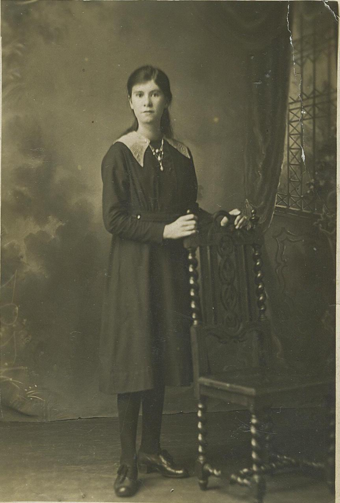
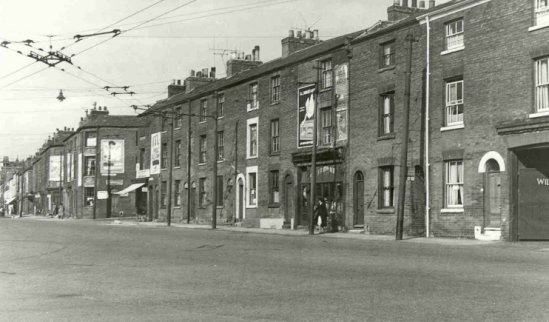
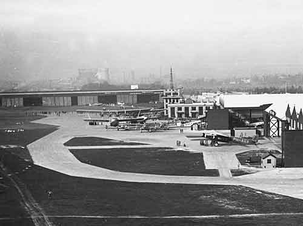
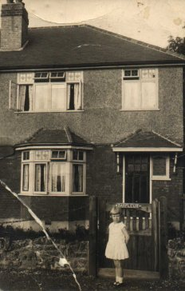
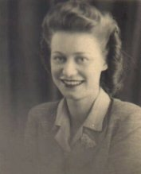
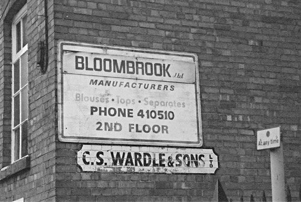
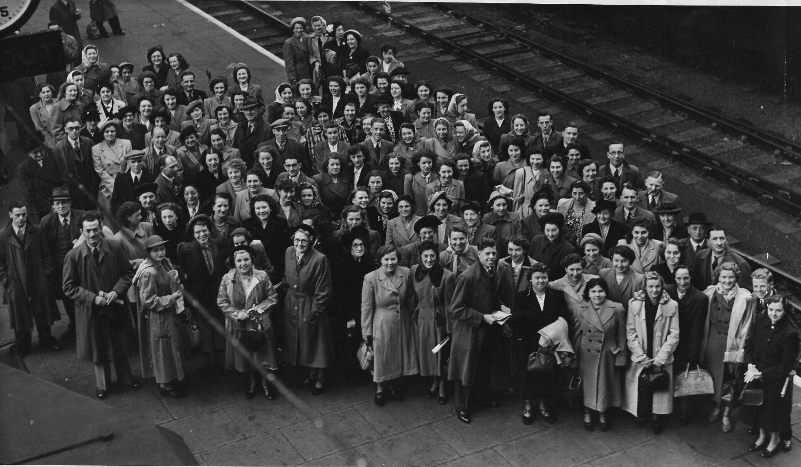
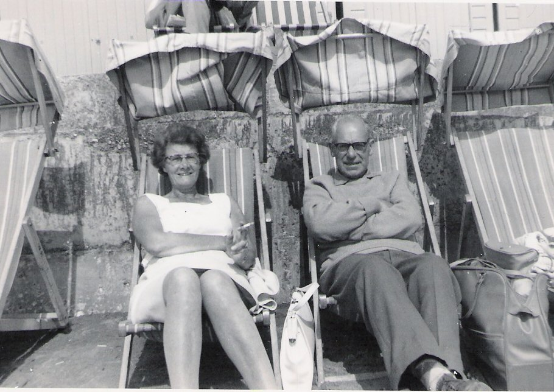

May was born on January 5 1904, at 107 Manvers Street, Sneinton, Nottingham. One of seven children and daughter of Eliza Fowler (nee Peck) . Eliza was married to James Fowler, a painter, employed by the local railway company to paint bridges. James had left Eliza in 1896 and Eliza formed a relationship with John Whitaker . As she was still married to James she was unable to marry John, but they had three children together. May was their second child together and their only daughter. Although John was the father James still appeared on their birth certificates. May's father John died in 1909, just after the birth of their youngest son.
Little is known of May's early life but she grew up and attended school in Sneinton and had a very elementary education. Life wasn't easy for May's family as her mother was a single parent. There was also the tragedy of her younger brothers death in 1913 when she was just 8 and then the death of her older brother, Bertie , who was killed in the First World War when she was 12.

In March 1923, at the age of 18, May married William Croome a miner and they lived together at 28 Davidson Street, Colwick. Within a year they had a baby daughter, Marjorie, but the baby did not survive her first birthday. This may have led to the breakdown of the couples relationship. Around this time we know she worked as a barmaid in the Old Moot Hall Wine Vaults in Nottingham Market Square (her brother Harry and sister Clara also worked here when it was bombed during the war) and it may have been here that she first met Bill Drury .

May left her husband William Croome in about 1925 and it is likely that Bill moved in with May who was living with her brother Jack in Hutton Street. It was at Hutton Street that May gave birth to their first child Mavis in May 1928. Within months they had moved to Staines in Middlesex, possibly to escape the scandal of May's divorce. Bill had been cited as an adulterer in the divorce case.

This was the start of the Great Depression and it is likely that they also moved south in search of work. May's divorce was finally granted on 12 May 1930 and the couple wasted no time in getting married at Staines Register Office on 12 July 1930. Whilst in Croydon Bill worked as an electrician and May found work as a domestic in the flyers hostel at Croydon Aerodrome.


The family eventually returned to Nottingham in about 1933 to Overdale Road in Sneinton staying with May's mother Eliza. Soon after their return May gave birth to Sheila, their second daughter. Sheila's impending arrival may have been the reason for their return to Nottingham. Sadly Sheila died before her second birthday in 1935, just weeks before May gave birth to twins Jean and June. In 1936 the family moved to their new council house in Deepdene Way, Cinderhill and remained there for most of their lives. May and William had four children Mavis, Sheila, and twins June and Jean. Sadly Sheila died at a very young age.



After returning to Nottingham May worked at CS Wardle and Sons in Cattle Boulevard, Nottingham as a semptress and later an examiner. Her eldest daughter Mavis joining her there on leaving school, as did the twins June and Jean and they worked there together until Mavis married and the company eventually relocated to London.



May outlived Bill by six years moving to Oakfield Close in 1990. She died in the University Hospital in April 1994, aged 89.